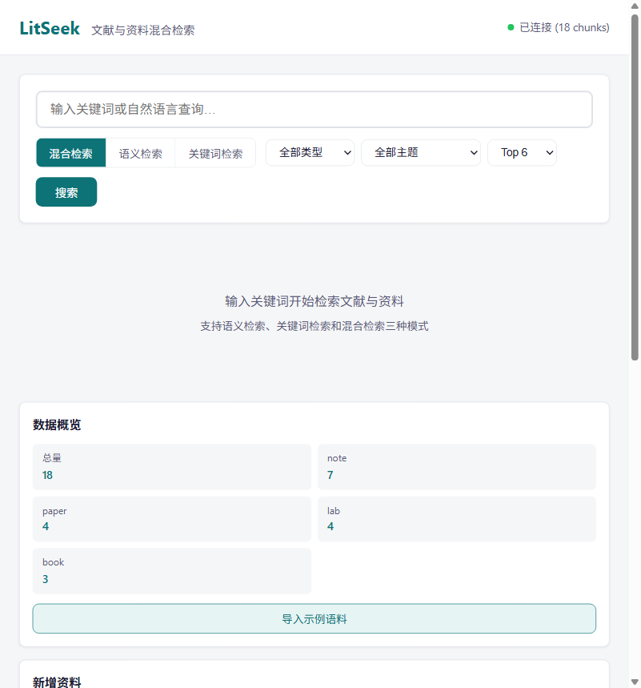
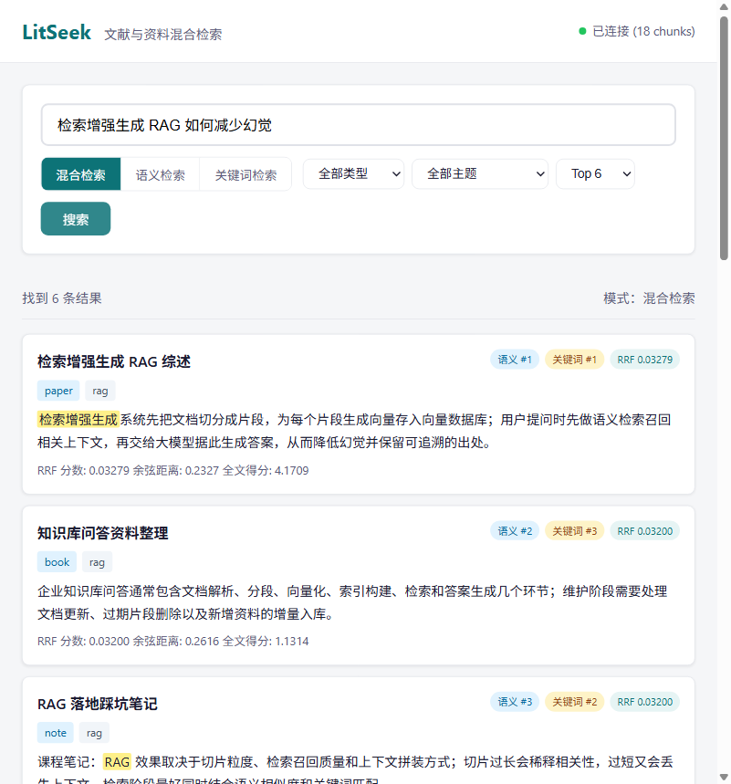
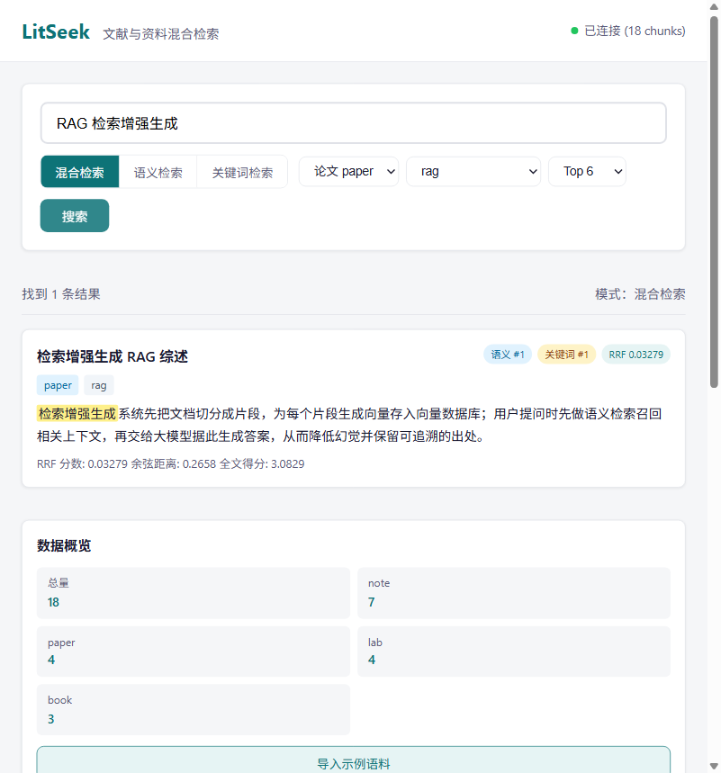
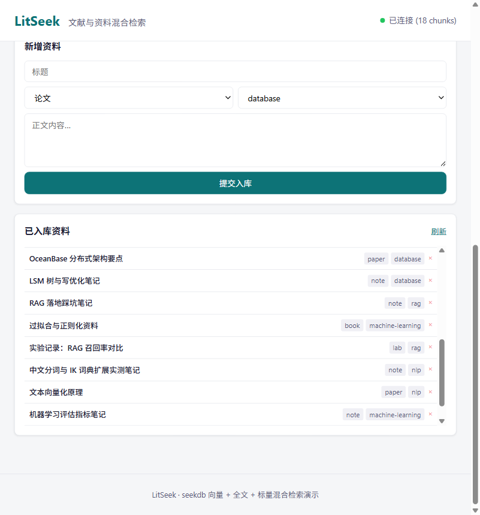
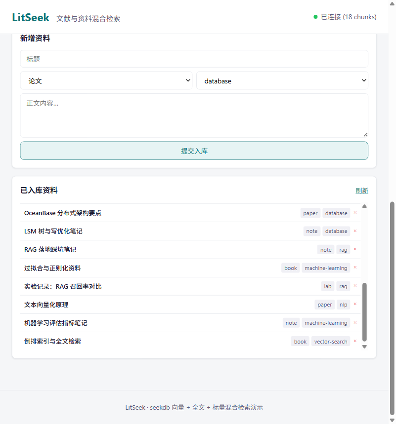

输入关键词开始检索文献与资料
支持语义检索、关键词检索和混合检索三种模式
输入关键词开始检索文献与资料
支持语义检索、关键词检索和混合检索三种模式
学习科研中，论文、笔记、实验记录、资料文档往往分散存放。按关键词搜索时，「换个说法描述」的相关段落无法被召回——例如搜「检索增强」找不到讲 RAG 的笔记，搜「向量」找不到讲嵌入的论文。
纯语义检索擅长找意思相近的内容，但对专有名词、术语编号、特定技术栈的精确命中能力弱——例如搜「IVF_FLAT」或「Paxos」时，向量模型可能无法精准定位到包含这些术语的段落。
资料类型（论文/笔记/实验/资料）和主题（database/rag/nlp 等）混杂在一起，难以按范围收敛。用户需要在检索结果中快速区分来源，并按主题过滤缩小范围。
LitSeek 的思路：把资料导入 seekdb，同时建立向量索引与中文全文索引，提供语义检索、关键词检索、混合检索三种方式，并支持按资料类型与主题做标量过滤，快速定位到相关段落与出处。
IVF_FLAT 余弦向量索引，cosine_distance 升序召回语义相近段落。384 维嵌入模型将文本映射为向量，近似最近邻检索在大规模语料上以少量精度损失换取速度。
IK 中文分词倒排索引，MATCH ... AGAINST (... NATURAL LANGUAGE MODE) 相关性排序。专有名词、术语编号可被精确命中，弥补语义检索的短板。
两路候选各取 top_k × 3，应用层按 RRF 公式 1/(k+rank+1)（k=60）融合排序。兼顾语义相近与术语精确命中，不易被单路带偏。
按 source（paper/note/lab/book）与 topic（database/rag/vector-search/nlp/machine-learning/workflow）组合过滤，三路查询均支持。
本地应用支持在线新增资料，自动按段落/句子切片（≤300 字）、生成 384 维向量入库；提供统计概览、已入库列表与单条删除。
每条结果给出标题、出处、主题、原文段落、语义排名、关键词排名、RRF/距离/全文得分，命中词在段落中黄色高亮，便于回溯出处。

首页：连接状态、数据概览、三种模式与过滤控件

混合检索：语义/关键词排名徽标、RRF、命中词高亮
语义检索：余弦距离与语义排名
关键词检索：全文得分与命中词高亮

source=paper 且 topic=rag 双重过滤

新增资料表单与已入库列表（本地应用功能）

已入库资料列表（18 chunks）
seekdb 在本项目中承担向量索引、全文索引、距离计算、标量过滤与统计聚合；应用层负责文本切片、向量生成与 RRF 融合。
| 能力 | seekdb 实现 |
|---|---|
| 向量索引 | VECTOR(384) + VECTOR INDEX，IVF_FLAT，cosine 距离 |
| 全文索引 | FULLTEXT INDEX + IK 分词器，MATCH AGAINST 自然语言模式 |
| 距离计算 | cosine_distance() |
| 标量过滤 | WHERE topic/source 条件 |
| 统计聚合 | COUNT(*) 与 GROUP BY source/topic |
| 混合排序 | 两路候选应用层 RRF 融合，seekdb 负责单路排序 |
pip install -r requirements.txt.env.example 为 .env，填写可用 seekdb 实例参数（云端免费实例 / 本地 server / Docker 三选一）python scripts/seed.py --reset 初始化 18 条示例语料uvicorn app.main:app --host 0.0.0.0 --port 8000 启动服务localhost:8000，无需登录即可使用完整说明见仓库 README.md，验证样例见 docs/validation-samples.md。